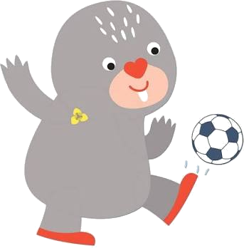

4 ชุมชน · ข้อมูลจริงจากการสำรวจ · เลื่อนลงเพื่อเริ่ม ↓

1 จุด = 1 แถวสำรวจ บ้านท่าตอน (129 แถว, as of 2026-10-13) · ที่มา data/public-aggregate.json
เลื่อนต่อเพื่อดูว่าในจำนวนนี้ มีกี่คนที่เจออะไรบ้าง
พื้นที่น้ำท่วมสูงสุดที่ดาวเทียมเห็น
ที่มา KokData/thaton-flood-events-2022-2026 · ภาพแสงไม่วัดความลึก และรวมแม่น้ำเดิม · ความสูงน้ำในภาพเทียบตามพื้นที่ ไม่ใช่ระดับน้ำจริง
ชาวบ้านใช้ชุดตรวจภาคสนามเทียบสี 9 ระดับ แล้วส่งผลเข้าระบบ
50 ppb เป็นเกณฑ์ส่งตรวจของระบบ ไม่ใช่คำรับรองว่าน้ำดื่มได้ · ผลตรวจจริงดึงจากฐานข้อมูลตอนแสดงผล
ตอบได้มากกว่า 1 ช่องทาง · บ้านท่าตอน 129 แถวสำรวจ · ที่มา data/public-aggregate.json